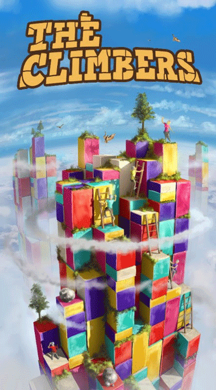
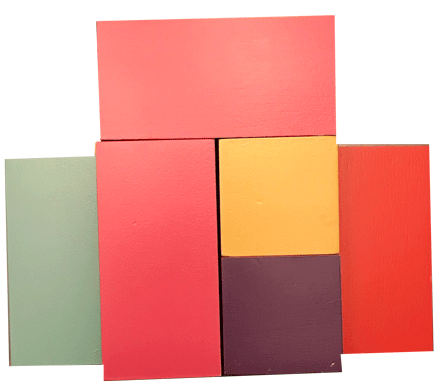
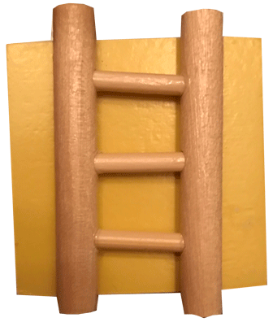
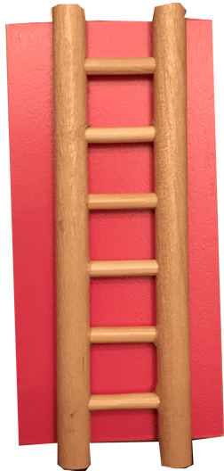
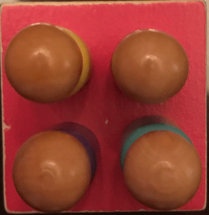
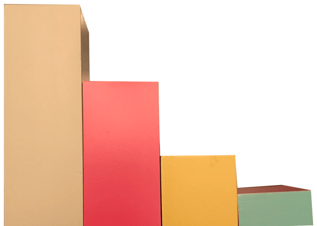
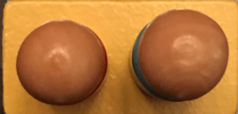
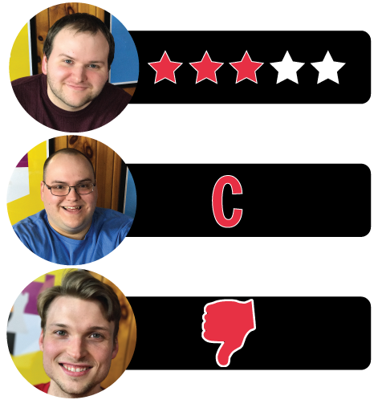

In this The Climbers review, Board Crazy looks at the 3D abstract game that was designed by Holger Lanz and published by Simply Complex (from Capstone Games). In The Climbers, players endeavor to reach the highest point on the structure that they can before upward movement becomes impossible. Read on for our thoughts on this game!

D reviews The Climbers
 (Author’s
note: this review is meant to accompany our gameplay video and will not
go in-depth on the game’s rules. If you’re interested in learning how
the game is played, please watch the video. It’s not bad.)
(Author’s
note: this review is meant to accompany our gameplay video and will not
go in-depth on the game’s rules. If you’re interested in learning how
the game is played, please watch the video. It’s not bad.)
Upon opening the box, The Climbers makes a pretty striking first impression. All of these colorful, wooden blocks are neatly packed inside, and the cute little ladders and pawns round out what is clearly a rather unique package. At first blush, one might assume that this is some sort of cousin to Jenga, but outside of the blocks and some precarious balancing acts, they aren’t really similar. The Climbers is all about building up instead of tearing down. So, if nothing else, I don’t know that I’ve really played a game quite like it before. Santorini is also an abstract 3D strategy game, but their gameplay has next to nothing in common.
So, The Climbers is pretty unique, which is not nothing, but is it good? That’s a trickier question. Actually understanding the rules is frustratingly difficult. The rulebook is quite vague on a number of points, so a first playthrough can be a confused affair. Though, once everyone has a firmer grasp on what they can and should be doing, The Climbers offers a pretty fun experience. There is something innately appealing about playing and building with blocks. Just look at the success of Lego and Minecraft if you’re unsure that that’s true. It appeals to people of all ages and backgrounds. So yeah, building and rearranging the structure of The Climbers is an enjoyable experience. And trying to wrap your head around the best moves to set yourself up for continued success provides a real challenge. The game is published in a product line called Simply Complex, and I would say that is an apt descriptor of this game’s experience. It’s not a complicated game, but it’s not easy either.
The game does have some obvious drawbacks, though. The random assembly of the structure and random drawing of your color can lead to situations where some players have a clear advantage over others in terms of maneuverability. And there can definitely be an advantage to getting very high, very quickly. Fortunately, sessions of The Climbers don’t take very long, but it only requires one player not having fun to bring down a group. Also, while the blocks do allow for a good amount of stability, there is always the danger of the structure getting accidentally knocked over, so choosing an appropriate surface and location is important. It’s not really an easy game to play sitting down, either, as you’ll want to see every angle of the tower. In the video, we built it on a platter in order to allow us to rotate it 360 degrees. I recommend this, as it prevents players from having to constantly get up and look around it, which can run the risk of people accidentally bumping it or the table.
Finally, while I did mention that the game makes a good first impression, I do have a couple issues with the components. The paint on the blocks started to chip off slightly after just one session, and it’s not like we were playing rough with them. They look good when they’re pristine, but I imagine they won’t look that good after several playthroughs. Also, and I’m not sure who is to blame for this, but the rulebook was not packaged in the game box that we received, so we had to look them up online. I don’t know if this is a common issue, but I would hope it isn’t because while it may not be a big problem for us, others with less immediate access to the internet wouldn’t be able to play the game without it. I won’t give this game a lower score because of that, but it definitely didn’t leave a good impression on me. Overall, The Climbers is unique and pretty fun, but not a game I’d be too eager to return to all that often.
D’s Rating: Three Stars out of Five.
Will reviews The Climbers
 Every
once in a while, I run into a tabletop game that I appreciate more in
theory than in reality. By that, I mean I like the idea of the game more
than the game itself, since the game itself was too difficult to
execute in a satisfying manner. Now, given that The Climbers is part of
the Simply Complex line from Capstone Games, I didn’t expect it to be
one of those games. After all, something that’s “simply complex”
shouldn’t be too difficult to design, and I’ve said in many reviews
before, my favorite games are the ones that combine simplicity and
nuance. Yet with The Climbers, I walked away with a sour taste in my
mouth that I wasn’t originally expecting. It’s the same sour taste I get
whenever I play a game that works better on paper than it does on the
table.
Every
once in a while, I run into a tabletop game that I appreciate more in
theory than in reality. By that, I mean I like the idea of the game more
than the game itself, since the game itself was too difficult to
execute in a satisfying manner. Now, given that The Climbers is part of
the Simply Complex line from Capstone Games, I didn’t expect it to be
one of those games. After all, something that’s “simply complex”
shouldn’t be too difficult to design, and I’ve said in many reviews
before, my favorite games are the ones that combine simplicity and
nuance. Yet with The Climbers, I walked away with a sour taste in my
mouth that I wasn’t originally expecting. It’s the same sour taste I get
whenever I play a game that works better on paper than it does on the
table.
Initially, there’s a lot to like about The Climbers. When I picked up the box for the first time, I was really surprised by the weight of it – it was very heavy. That’s because all of the physical components (blocks, meeples, ladders) are made of wood, which is always a nice touch. The game is also very colorful, which is also always a plus. I should point out – our copy of The Climbers came without a rulebook. I can only assume that this was a packaging error, and it doesn’t affect my opinion of the game. Still, not packaging a rulebook reflects poorly on the publisher.
Before starting a game, there’s also a lot to like about the gameplay. The idea that you’re trying to scale a tower of vibrantly colored blocks is intriguing, and I definitely couldn’t wait to get started. I also admired the mechanic that allowed each player to rotate/move a block once per turn, as that would have the structure in a state of constant flux. Again, I was very excited for The Climbers, in theory. But then we started playing this game, and slowly I began noticing a number of flaws. Let’s start with one that shouldn’t bother me as much as it does, given that it’s inherent in these kinds of games, but still does anyways. I’m referring to the three-dimensional (3D) nature of games like The Climbers. While it’s cool in concept, actually getting up and walking around the tower is a hassle. Events might unfold on the opposite side of the blocks from where you’re sitting, and in a game where you really can’t afford to miss your opponents’ moves, this is undoubtedly problematic. If you’re without something that allows you to rotate the mountain, I recommend playing this game standing. But if you’re like me, then you hate standing. Objectively, criticizing a 3D game for being 3D is kind of stupid, but I stand by my opinion.
Another flaw I couldn’t help but to notice is that there aren’t many disparate strategies to follow in The Climbers. You can either take your time and work your way up, or you can utilize your ladders early and get into a quick lead. In our experience, the latter is far more effective, as the highest player can start harassing the lower players by removing their options for upward movement. Honestly, I wouldn’t recommend any other strategy because if you take your time, especially against experienced players, you’re going to lose. And when one strategy becomes so obviously effective, it badly hurts replayability. I’m not saying that the quick-climb strategy will work 100% of the time, but it works enough that it should come into play during most sessions.
Lastly, if you don’t enjoy the element of luck in your games, then you probably won’t love The Climbers. The block mountain is set up prior to the meeples being chosen, which means that the color you end up with might be in a bad way from the get-go. It could also go the other way. Let’s say that you’re using the yellow meeple, and you look at the mountain and notice that several yellow blocks are in fortuitous positions. In that situation, you would be able to scale quicker than someone who has to spend each turn rotating and moving blocks. If you were to play this game enough, I imagine that layout and luck would eventually swing your way. It’s for that reason that the luck factor doesn’t bother me too much here, but it was definitely important to point out.
All in all, The Climbers is too frustrating gameplay-wise for me to recommend it to everyone. I did appreciate the game’s build-quality and 3D puzzle mechanics, but I was bothered by almost everything else. Personally, I didn’t find the gameplay to be fun enough to justify the amount of work (and standing) to play The Climbers. All of the excitement that I felt early on was quickly replaced with disappointment and annoyance. This game works a lot better in theory than it does on a gaming table, and that’s a real shame. I have no doubt that there’s an audience for The Climbers; I’m just not part of it.
I give The Climbers a: C
Graham reviews The Climbers
 We recently played a game called Onitama
– it’s a pretty neat abstract strategy game. In my review of Onitama, I
mentioned how we need to play more abstract games because they tend to
have a simple brilliance to them. Most of the time, these games have
intuitive rules, few mechanics, and minimal luck involved. It creates a
balanced gameplay experience, in which the strategy naturally forms, and
it usually comes down to a battle of wits. The Climbers has a lot of
the same aspects that I’ve seen in most other abstract strategy games,
but it just never really clicked. I didn’t get that same satisfaction
out of it that I do other similar board games like Onitama, Santorini,
or Element.
We recently played a game called Onitama
– it’s a pretty neat abstract strategy game. In my review of Onitama, I
mentioned how we need to play more abstract games because they tend to
have a simple brilliance to them. Most of the time, these games have
intuitive rules, few mechanics, and minimal luck involved. It creates a
balanced gameplay experience, in which the strategy naturally forms, and
it usually comes down to a battle of wits. The Climbers has a lot of
the same aspects that I’ve seen in most other abstract strategy games,
but it just never really clicked. I didn’t get that same satisfaction
out of it that I do other similar board games like Onitama, Santorini,
or Element.
I think the main thing that bothers me about The Climbers is that it’s chaotic and random, but not in a balanced way. The setup involves all players constructing the tower, and it’s pretty simple. You place two neutral colored blocks standing vertically in the center, then you randomly place the colored blocks all around the center blocks so that they are completely covered. This process makes the structure completely random, and if you happen to get stuck with a color that isn’t well represented, you’re kind of screwed. I feel like in most abstract games, the environment is completely neutral so that the game is fair, or that the randomization happens on a much smaller scale, so that you have more control over it. I will admit – it is fun to build the structure, but I just don’t think it’s the best way if you want to have a balanced and competitive game.
The next thing that frustrates me about The Climbers is that there really isn’t that much strategy in it. Each turn feels very disjointed, and the game ultimately comes down to who can get to the highest point the quickest. If you can do that, then you can play defensively and it becomes very simple. It’s also weird because I feel like there is a lot you can do on your turn, but it doesn’t feel like it really amounts to anything. Each turn, a player can move up as many blocks as possible, as well as take a block from almost anywhere on the board, rotate it, and then move it to basically wherever they want. In reality, your turn will typically have you moving a block so that you can climb up one space. Repeat that for 10 turns, and that’s usually how the game plays out. You can see how it might get boring pretty quickly.
And then there’s the rulebook… I’m not really going to get into this too much. I found the rulebook to be unhelpful and confusing, which made learning the game a process. After about ten minutes with the rulebook, we gave up and watched the ‘Watch It Played‘ for The Climbers. Thank you, Rodney.
I will mention that even though there’s a lot about The Climbers that I don’t like, I really do appreciate the pieces. All of the components are made out of solid wood, and they are painted pretty nicely. Everything is well constructed, and it almost feels like each piece gets crafted individually rather than being made on some assembly line.
This game seemed promising when I first saw it, especially with my new-found fondness for abstract strategy games. Unfortunately, it really didn’t live up to expectations. I guess The Climbers had some pretty stiff competition, because Onitama and Santorini are two games I really love. The Climbers feels like a game that would do well with younger kids, and it doesn’t seem to be a competitive game that enthusiasts can get really into. Overall, I give The Climbers one thumb down.
The Climbers Game Review – Board Crazy’s Ratings

Leave a Reply
You must be logged in to post a comment.